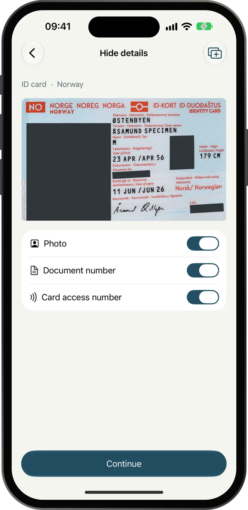
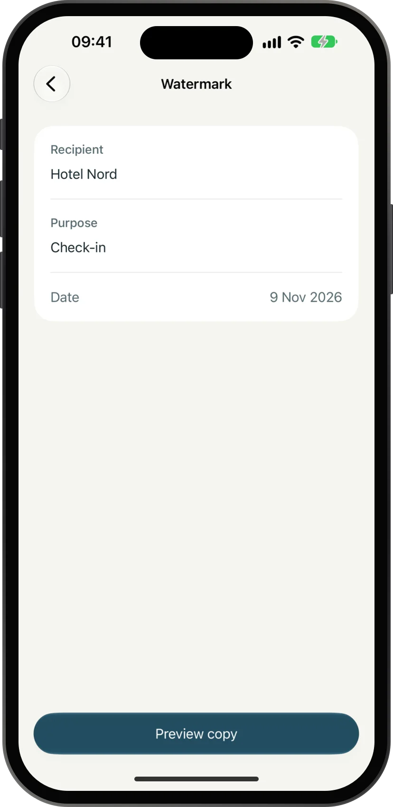
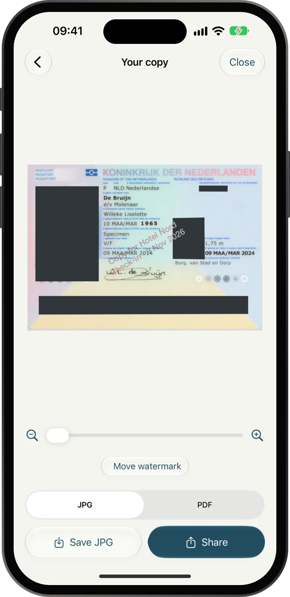

MaskCopy
分享证件，但不分享全部。
房东、雇主、酒店和中介常常要一份证件复印件，但大多数并不需要你的个人号码、证件号、照片或机读区。MaskCopy 做一份遮住这些部分的副本，写明给谁用，而且从不把你的证件发到任何地方。
平台iPhone，iOS 18 或更新版本
价格免费，Apache 2.0
网络代码里没有联网功能
界面语言英文
- 01找到并遮住号码、照片和机读区，自动建议，由你检查。
- 02写明给谁收件人、用途和日期写在每一页上。
- 03分享副本JPG 或 PDF，合并成一张图，不带位置和相机信息。



它能做什么
- 扫描或导入用相机扫描，或选一张照片、一份 PDF。MaskCopy 会自动把证件摆正。
- 找出要遮的部分个人号码、证件号、机读区、卡片访问号、地址、条码和照片。个人号码会用校验位核对。
- 由你决定每个建议都是一个看得见的框。可以关掉某一类，移动框、调整四角，或者自己加框。
- 写明给谁收件人、用途和日期写在每一页上。
- 涂黑，不是模糊遮住的部分直接涂实。JPG 和 PDF 不带位置或相机信息。
- 只在 iPhone 上使用 Apple 的设备端识别。没有账号、没有统计、不上传、不留记录。
支持的证件
可以逐项识别 27 个国家和地区的护照、身份证、居留卡和驾照：荷兰、德国、法国、英国、意大利、西班牙、挪威、瑞典、丹麦、芬兰、比利时、波兰、爱尔兰、瑞士、奥地利、葡萄牙、美国、加拿大、澳大利亚、新西兰、中国大陆、香港、台湾、日本、韩国、新加坡和马来西亚。其他国家的护照也能找到机读区。